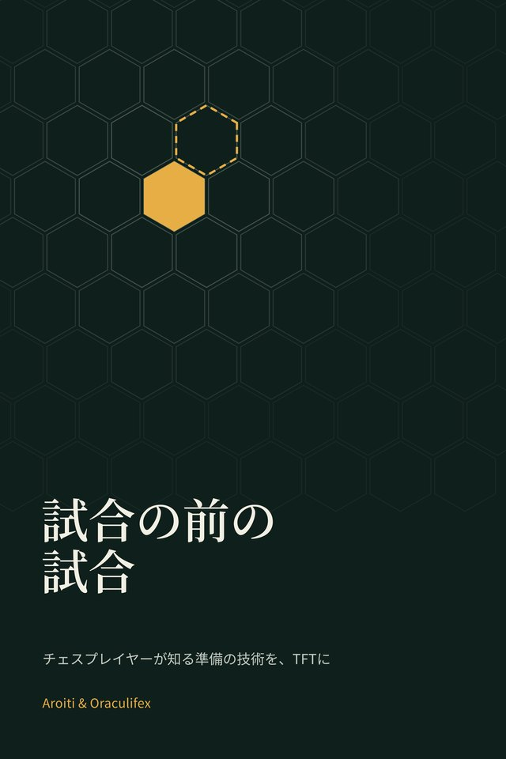
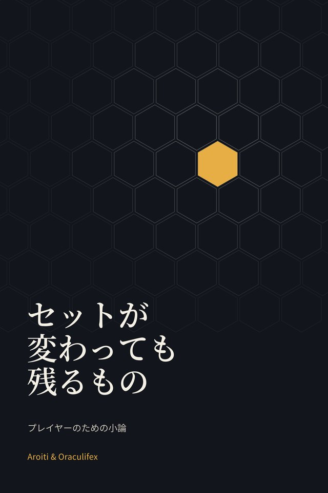

新刊
試合の前の試合
チェスプレイヤーが知る準備の技術を、チームファイト タクティクスに
チェスでは、対局は最初の一手より前に始まっていることがよくあります。この短いエッセイは、チェスの1世紀にわたる準備の知恵を借りてTFTに合わせました。レパートリー、勉強、当日、試合、そして試合後の分析まで。
無料、登録不要。 30ページ.

オラクルは、Aroitiが自分の試合を測定する統計ツールです。本の数値もここから来ています。まだ訪問者には公開していません。
まだ開いていません。 XでAroitiをフォロー新刊
チェスプレイヤーが知る準備の技術を、チームファイト タクティクスに
チェスでは、対局は最初の一手より前に始まっていることがよくあります。この短いエッセイは、チェスの1世紀にわたる準備の知恵を借りてTFTに合わせました。レパートリー、勉強、当日、試合、そして試合後の分析まで。
無料、登録不要。 30ページ.


プレイヤーのためのチームファイト タクティクス小論
構成は数か月で消えます。決断は残ります。この本は、すべてのセットを越えて残るものと、まだ誰もプレイしたことのない試合、つまり次の試合への向き合い方について書いたものです。
無料、登録不要。 87ページ.
セットごとに1冊、ほかのテーマも準備しています。